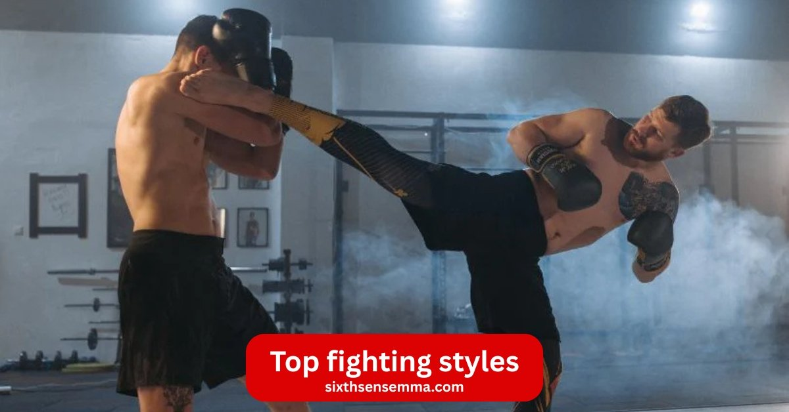
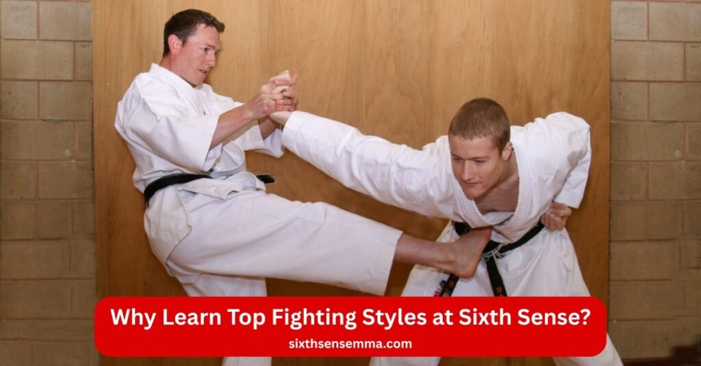
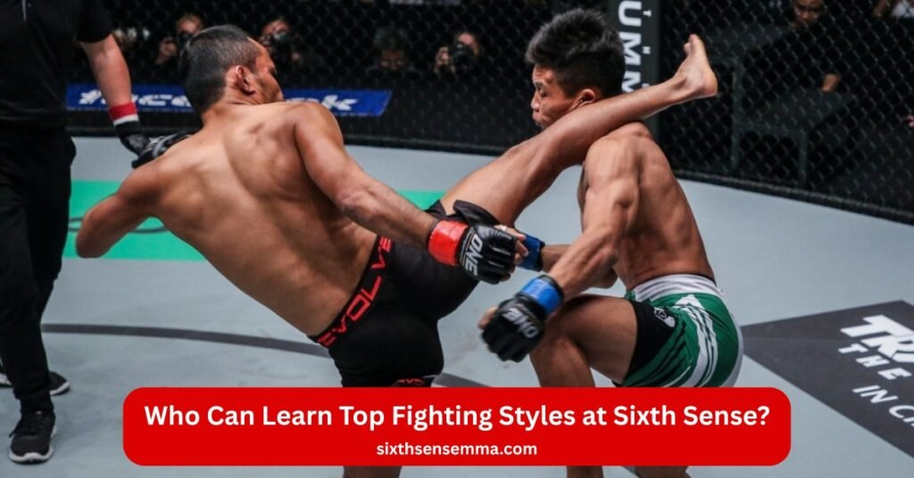

Top Fighting Styles Easy BJJ Throws, Locks & Self-Defense by Sixth Sense Martial Arts

Top fighting styles start with Brazilian Jiu-Jitsu (BJJ) at Sixth Sense Martial Arts. This martial art rules ground fighting through joint locks and grapple control. BJJ handles street fight drops better than muay thai kick or karate punch. Many mma fighters win cages with BJJ base. We teach this effective martial to kids teens adults and families. Martial arts training builds self-defense fitness and calm. Spar safe on clean mats with expert eyes. BJJ tops krav maga speed or judo throws for full hold. Krav maga is an israeli fast art. Judo is a japanese martial for stands. BJJ owns the mat. Free trial waits for you.
Top Fighting Styles Programs at Sixth Sense Martial Arts
When people search for top fighting styles they want a martial art that works in real combat. At Sixth Sense Martial Arts we teach Brazilian Jiu-Jitsu or BJJ as the core fighting style. This grappling martial art comes from brazilian jiu-jitsu roots and stands out among various martial arts. Many mma fighters use BJJ because it focuses on ground fighting and joint locks. You learn to control an opponent even if they are bigger. This makes BJJ highly effective in street fight situations or common street attacks.
Brazilian Jiu-Jitsu (BJJ) – All Levels
Our BJJ classes cover every skill stage. Beginners start with basic martial arts techniques like escapes and holds. Advanced students practice striking techniques combined with grapple moves. BJJ is a martial arts discipline that builds strength and calm thinking. It differs from muay thai or thai boxing which use punch and kick. BJJ stays on the mat for ground fighting. This martial art that emphasizes leverage beats raw power. Students spar in safe rolls to test skills. Many martial arts schools ignore the ground but BJJ masters it.
Kids BJJ Programs (Little & Rising Champions)
Children from age five join our Little Champions group. They play games that teach self-defense and respect. Rising Champions move to harder drills. Kids avoid bullies by learning effective martial art for self-defense. Parents see changes fast. The program fits martial arts for fitness and fun. No kickboxing or karate high kicks here. Just smart grappling and ground fighting. This martial arts style keeps kids active and safe.
Teen & Adult BJJ Classes (Unlimited 60-Min)
Teens and adults get unlimited sessions each sixty minutes long. Classes run daily. You pick beginner or advanced tracks. Adults build martial arts experience for mma goals or daily confidence. BJJ handles combat situations better than taekwondo or kung fu. Those korean martial art and chinese martial art focus on stands up moves. BJJ takes fights down with joint locks. You train like mma fighter without full contact strikes. Spar sessions let you apply fighting techniques in live rolls.
Family BJJ Programs
Families train side by side. Parents and kids share mats. This setup strengthens bonds. Everyone learns the same effective martial moves. Discounts apply for groups. No need for separate martial arts classes. The whole family masters BJJ together. This hybrid form of martial arts fits modern life.

Why Learn Top Fighting Styles at Sixth Sense?
This section shows six clear reasons to pick Brazilian Jiu-Jitsu (BJJ) at our Coppell gym. Each reason fits real life needs from safety to fun. BJJ stands as a leader among top fighting styles because it works on the ground where most street fight end. You gain skills that beat muay thai punch or taekwondo kick when the fight drops. Below we break down every benefit with simple facts.
Build Strong Self-Defense
Self-defense tops the list for most students. BJJ teaches you to stop common street attacks fast. You learn joint locks and holds to control any attacker. No need for striking techniques like box or kickboxing. Grapple moves let smaller people win. This effective martial art for self-defense handles real combat better than krav maga quick stops. Krav maga is an israeli system but BJJ keeps control longer. Practice spar drills make reactions automatic.
Get Fit and Strong
Every class burns calories and builds muscle. Martial arts for fitness replace gym boredom. You roll and drill for sixty minutes. Full body fitness comes from pulling and pushing on the mat. BJJ strengthens core grip and legs without weights. Students drop weight and gain power. This martial arts training beats running alone. Ground fighting works every part at once.
Win in Competitions
Students who want to fight in tournaments get full support. We prepare for local events and bigger shows. Train to win in competitions with belt tests and matches. BJJ rules in ultimate fighting championship and vale tudo fights. Learn submission moves that end bouts quick. Many mma fighters start here. You spar under rules to stay sharp.
Learn Real MMA Skills
Mixed martial arts fans love BJJ base. Many mma fighters cross train but BJJ gives the edge on the floor. Master takedowns guard and chokes. This grappling martial art pairs with striking later. MMA & grappling power grow fast in our rolls. BJJ fills gaps left by thai boxing or karate.
Boost Confidence
Martial arts can help you walk taller. BJJ builds calm under pressure. You face partners in live spar. Wins and losses teach control. This martial arts discipline turns doubt into strength. Students report better choices daily. Sixth Sense name fits the instinct you gain.
Fun for Kids and Adults
Classes stay light and active. Kids play games that hide hard work. Adults laugh during drills. Fun & safe training keeps everyone coming back. No ego on the mat. Martial arts classes mix ages in open mats. Family rolls add joy. This popular martial arts draws all types.
Benefits of Learning Top Fighting Styles at Sixth Sense
Brazilian Jiu-Jitsu (BJJ) delivers clear gains that fit daily life. This martial art shines among top fighting styles for its focus on ground fighting and joint locks. Students at our Coppell location see fast changes. Below each benefit shows how BJJ outperforms muay thai kick or judo throws in combat situations.
Practical Real-World Self-Defense Training
BJJ prepares you for street fight chaos. Most common street attacks end on the ground. You learn effective martial moves to escape and control. Grapple holds stop threats without punch or kickboxing. This effective in real-world situations art beats krav maga flash stops. Krav maga is an israeli quick system but BJJ locks the win. Spar practice builds muscle memory for self-defense.
Full Body Fitness
One hour on the mat equals a full workout. Martial arts for fitness burn fat and add strength. Pull push and roll target every muscle. No machines needed. BJJ gives full body fitness better than taekwondo spins. Taekwondo is a korean martial for legs but BJJ works core and grip too. Students feel energy rise after weeks.
Train to Win in Competitions
Competition paths start day one. Train to win in competitions with belt ranks and local meets. BJJ dominates ultimate fighting championship mats. Many mma fighters earn medals here. Learn submission chains that force taps. Spar under timers sharpens timing. Vale tudo fights reward BJJ control.
MMA & Grappling Power
Mixed martial arts needs ground skills. MMA & grappling power grow from BJJ base. Many mma fighters pair striking techniques with joint locks. BJJ fills holes left by thai boxing or karate. Master guard passes and chokes. This grappling martial art turns average stands into wins.
More Confidence
Martial arts can help build inner strength. BJJ drills force calm choices. Live spar teaches you trust skills. Losses become lessons. This martial arts discipline shifts mindset. Students handle real combat stress better. Sixth Sense instinct kicks in daily.
Fun & Safe Training
Mats stay clean and rules keep rolls light. Fun & safe training mixes laughs with sweat. Kids chase games. Adults drill and roll. Martial arts classes welcome all. No hard hits like box. BJJ focuses on ground fighting with control. Family open mats add joy. This popular martial arts keeps smiles high.

Who Can Learn Top Fighting Styles at Sixth Sense?
Brazilian Jiu-Jitsu (BJJ) fits every person at our Coppell gym. This martial art ranks high in top fighting styles for its grappling martial art base. No matter your age or goal you start on the same mat. BJJ beats muay thai punch or karate kick when fights hit the floor. Each group below shows how BJJ serves various martial arts needs.
Perfect Martial Arts Training for Kids 5+
Little ones from five years join Little Champions. Games hide self-defense lessons. Rising Champions add harder joint locks. Kids learn respect and focus. Martial arts for fitness keeps them moving. No high kick like taekwondo. Taekwondo is a korean martial for spins but BJJ builds smart ground fighting. Parents watch bullies lose power.
Confidence-Building Martial Arts for Teens
Teens face peer pressure daily. BJJ teaches calm rolls. Spar builds real courage. This martial arts discipline stops common street attacks. Teens stand taller after months. BJJ handles combat situations better than krav maga grabs. Krav maga is an israeli fast system but BJJ adds control time.
Skill-Focused MMA & Fitness for Adults
Adults chase mma dreams or daily strength. Unlimited classes drill fighting techniques. MMA & grappling power grow fast. Many mma fighters start with BJJ base. Pair striking techniques later. BJJ fills gaps from thai boxing or judo. Judo is a japanese martial for throws but BJJ owns the mat.
Empowering Self-Defense & Fitness for Women
Women gain safe space on the mat. BJJ levels size gaps with leverage. Effective martial art for self-defense stops grabs quick. Martial arts for fitness tones without bulk. BJJ works in street fight better than kickboxing. Women roll with control and leave strong.
Beginner-Friendly Training for All Levels
Zero experience starts here. First class teaches basic grapple holds. Martpial arts training grows step by step. BJJ welcomes all like wrestling but adds submission. No punch needed. Spar stays light until ready. Effective in a street fight skills build slow and sure.
Advanced Training for Competitive Fighters
Fighters eye belts and podiums. Train to win in competitions with timed rolls. BJJ rules ultimate fighting championship floors. Many mma fighters sharpen joint locks here. Vale tudo fights favor BJJ control. Spar hard and drill sharp for gold.
Why Choose Sixth Sense for Top Fighting Styles Training?
Sixth Sense stands out in Coppell for Brazilian Jiu-Jitsu (BJJ) training. This martial art leads top fighting styles with ground fighting and joint locks. Our gym fits every student from kids to mma hopefuls. BJJ handles real combat better than muay thai kick or karate punch. Each point below shows why we deliver the best martial arts training.
Free Trial Class
Start BJJ with no cost. One session proves why it ranks in top fighting styles. Try grapple moves and spar light. No pressure to join. Martial arts classes open to all. Call 469-972-7800 or visit 817 S MacArthur Blvd #100 Coppell TX 75019. Email info@sixthsensemma.com to book.
Expert Coaches
Mattheus Galvao leads with years on the mat. He teaches fighting techniques that win in street fight or cage. Many mma fighters trust his BJJ drills. Coaches spot flaws fast. Effective martial guidance beats self-defense guesswork. Krav maga is an israeli quick art but our BJJ builds full control.
Small Groups
Classes cap low for eyes on every roll. Small groups mean personal fixes. Spar partners match your size. Martial arts for fitness grows faster. No wait for help like big kickboxing rooms. BJJ focuses on ground fighting with direct tips.
Safe & Fun Training
Mats clean daily. Rules keep rolls light. Fun & safe training mixes laughs and sweat. Kids chase games. Adults drill submission. No hard box hits. BJJ stays controlled. Martial arts discipline builds joy not fear.
Coppell’s Top Gym
Local votes pick us first for BJJ. Coppell’s top gym sits at 817 S MacArthur Blvd #100. Martial arts school serves the area best. BJJ beats taekwondo spins here. Taekwondo is a korean martial for show but BJJ wins combat situations.
Kids & Adults Programs
Daily slots fit all ages. Little Champions start five plus. Unlimited adult sixty minute sessions. Family plans save cash. Kids & adults programs share self-defense core. BJJ grappling martial art unites everyone on the mat.
Contact Us
Reach Sixth Sense Martial Arts today. Phone 469-972-7800. Email info@sixthsensemma.com. Address 817 S MacArthur Blvd #100 Coppell TX 75019. Book your free trial and start top fighting styles training. BJJ teaches self-defense and joint locks that work in street fight. Join our martial arts classes now.
Conclusion
Brazilian Jiu-Jitsu leads top fighting styles for real combat and daily life. This grappling martial art beats muay thai punch or taekwondo kick on the ground. Many mma fighters build wins with BJJ base. At Sixth Sense you gain martial arts for fitness and calm mind. Kids learn respect. Adults master fighting techniques. Spar safe and grow strong. Effective martial art for self-defense starts here. Call or email to roll on the mat. Your martial arts training in Coppell begins with one step.
Follow Us on Social Media
Stay connected with Sixth Sense MMA through our social media channels. Follow us for class updates, training tips, and a closer look at our self defense community.
FAQ’s
Brazilian Jiu-Jitsu (BJJ) stops bigger attackers with leverage and joint locks. Most street fight end on the ground. BJJ controls there best. Sixth Sense Martial Arts teaches BJJ daily in Coppell with expert Coach Mattheus Galvao. Free trial class proves it works for self-defense fast.
BJJ, Muay Thai, Wrestling, Boxing rule modern combat. BJJ shines in ground fighting. Sixth Sense Martial Arts focuses only on BJJ for real control. Kids and adults learn grapple moves daily. Small groups ensure fast progress. Free trial at Coppell gym starts your martial arts training now.
BJJ demands live spar and years of rolls. Technique beats strength. Sixth Sense Martial Arts builds BJJ skills step by step in safe classes. Coach Mattheus fixes flaws fast. Beginners to advanced train together. Free trial in Coppell shows why BJJ takes time but pays off big.
Pure boxing wins with footwork and punch combos. Ring rules favor hands. Sixth Sense Martial Arts sticks to BJJ for full control on the mat. Ground fighting adds real power. Try BJJ free in Coppell. Coach Mattheus teaches self-defense that works when boxing alone fails.
Game-specific moves. Real life needs real training. BJJ at Sixth Sense Martial Arts gives actual self-defense. Kids learn anti-bullying. Adults master joint locks. Free trial in Coppell starts today. Coach Mattheus builds martial arts skills that work outside games. Train BJJ for true power.
Local gyms teach real skills. Sixth Sense Martial Arts offers BJJ at 817 S MacArthur Blvd #100 Coppell TX. Daily classes for kids and adults. Grapple and spar safe. Coach Mattheus leads every session. Free trial class lets you test top fighting styles in person now.
Game meta changes. Real top fighting styles stay BJJ. Sixth Sense Martial Arts teaches BJJ for ground fighting control. Kids and adults roll daily in Coppell. Free trial proves BJJ beats virtual moves. Coach Mattheus builds real self-defense skills that last beyond any game update.
In-game choice. Real life BJJ wins every time. Sixth Sense Martial Arts trains BJJ on clean mats in Coppell. Joint locks and grapple stop threats. Free trial class starts your journey. Coach Mattheus turns beginners into calm fighters. BJJ rules street fights and daily confidence.
Virtual currency only. Real BJJ training costs nothing to try. Sixth Sense Martial Arts offers a free trial in Coppell. Grapple and joint locks beat game buttons. Coach Mattheus teaches self-defense that works. Kids and adults train daily. Start top fighting styles with one free class today.
Train with us in Coppell
The first class is free. Shorts, a t-shirt and a water bottle. We lend the rest.
Book a free class